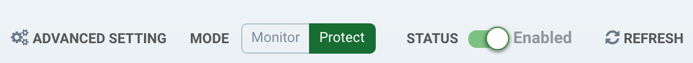
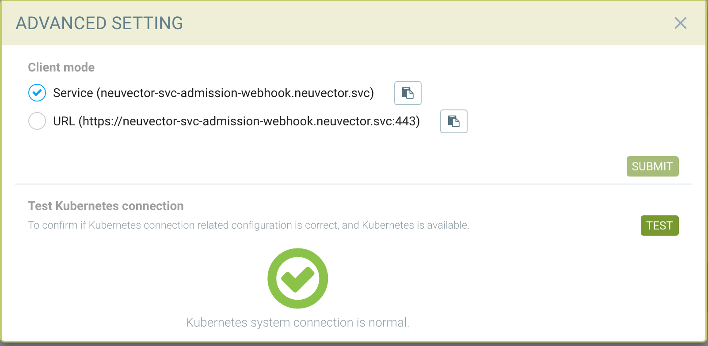
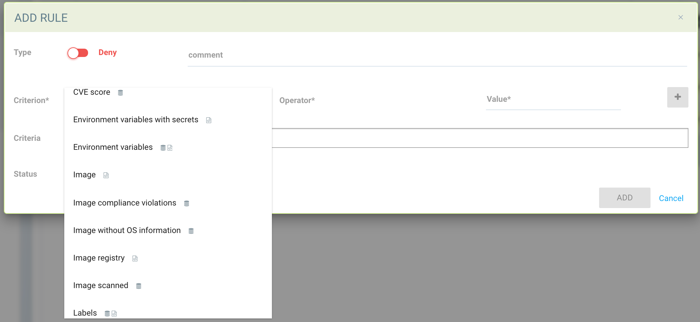
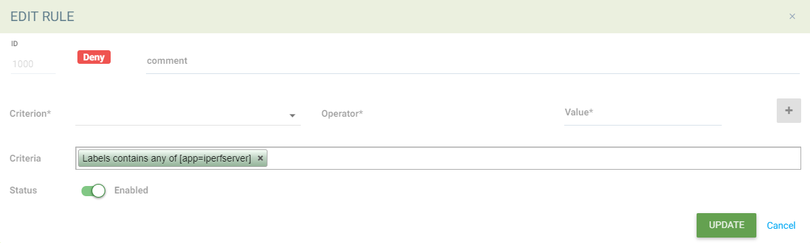
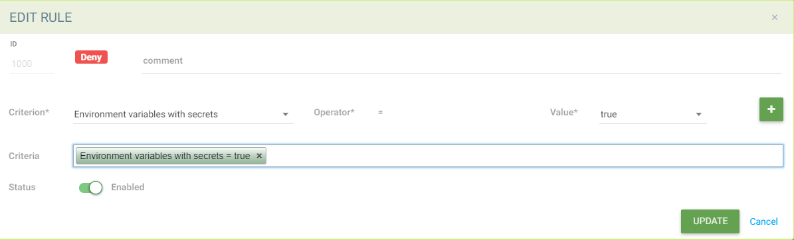
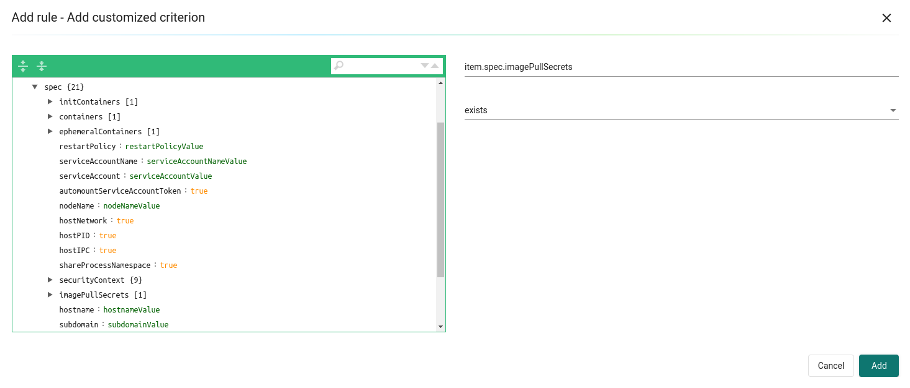

Admission Controls
Controlling Image / Container Deployments
With Admission Control integration with orchestration platforms such as Kubernetes and OpenShift, SUSE® Security is playing an important role within the orchestration platform’s deployment pipeline. Whenever a cluster resource such as Deployment is created, the request from the cluster apiserver will be passed to one of the SUSE® Security Controllers to determine if it should be allowed to deploy or denied based on the user-defined Admission Control rules prior to creating the cluster resource. The policy decision SUSE® Security makes will be passed back to cluster apiserver for enforcement.
This feature is supported in Kubernetes 1.9+ and Openshift 3.9+. Before using the Admission Control function in SUSE® Security, while it’s possible to setup admission control from --admission-control argument passed to the cluster apiserver, it’s recommended to use dynamic admission control. Please see Kubernetes and Openshift sections below for configuration.
Kubernetes
The ValidatingAdmissionWebhook and MutatingAdmissionWebhook plugins are enabled by default.
Check if admissionregistration.kubernetes.io/v1beta1 is enabled
kubectl api-versions | grep admissionregistration
admissionregistration.k8s.io/v1beta1Openshift
The ValidatingAdmissionWebhook and MutatingAdmissionWebhook plugins are NOT enabled by default. Please see the examples in the OpenShift deployment sections for instructions on how to enable these. A restart of the OpenShift api and controllers services is required.
Check if admissionregistration.kubernetes.io/v1beta1 is enabled
oc api-versions | grep admissionregistration
admissionregistration.k8s.io/v1beta1Enabling Admission Control (Webhook) in SUSE® Security
The Admission Control feature is disabled by default. Please go to Policy → Admission Control page to enable it in the SUSE® Security console.

Once the Admission Control feature is enabled successfully, the following ValidatingWebhookConfiguration resource will be created automatically. To check it:
kubectl get ValidatingWebhookConfiguration neuvector-validating-admission-webhookSample output:
NAME CREATED AT
neuvector-validating-admission-webhook 2019-03-28T00:05:09ZThe most important information in ValidatingWebhookConfiguration resource for SUSE® Security is cluster resources. Currently once a cluster resource such as Deployment SUSE® Security registered is created, the request will be sent from orchestration platform apiserver to one of the SUSE® Security Controllers to determine if it should be allowed or denied based on the user-defined rules in SUSE® Security Policy → Admission Control page.
If the resource deployment is denied, an event will be logged in Notifications.
To test the Kubernetes connection for the client mode access, go to Advanced Setting.

For special cases, the URL access method using the NodePort service may be required.
Admission Control Events/Notifications
All admission control events for allowed and denied events can be found in the Notifications → Security Risks menu.
Admission Control Criteria
SUSE® Security supports many criteria for creating an Admission Control Rule. These include CVE High Count, CVE Names, image labels, imageScanned, namespace, user, runAsRoot, etc. There are two possible sources of criteria evaluation, Image Scans and Deployment Yaml file scans. If a criterion requires an image scan, the scan results from Registry Scanning will be used. If the image was not scanned, the admission control rule will not be applied. If a criterion requires scanning of the deployment yaml, it will be evaluated from the Kubernetes deployment. Some criteria will use the results from either an image scan OR a deployment yaml scan.
-
CVE score is an example of a criterion requiring an image scan.
-
Environment variables with secrets is an example of a criterion using the deployment yaml scan.
-
Labels and Environment variables are examples of criteria which will use BOTH image and deployment yaml scans results (logical OR) to determine matches.

After the criterion is selected, the possible Operators will be displayed. Click the ‘+’ button to add each criterion.
Using Multiple Criteria in a Single Rule The matching logic for multiple criteria in one admission control rule is:
-
For different criteria types within a single rule, apply 'and'
-
For multiple criteria of same type (e.g. multiple namespaces, registries, images),
-
Apply 'and' for all negative matches("not contains any", "is not one of") until the first positive match;
-
After the first positive match, apply 'or'
-
Example with Matching a Pod Label
apiVersion: apps/v1
kind: Deployment
metadata:
name: iperfserver
namespace: neuvector-1
spec:
replicas: 1
template:
metadata:
labels:
app: iperfserverThe rule to match would be:

Example with Matching Environment Variables with Secrets
apiVersion: apps/v1
kind: Deployment
metadata:
name: iperfserver
namespace: neuvector-1
labels:
name: iperfserver
spec:
selector:
matchLabels:
name: iperfserver
replicas: 1
template:
metadata:
labels:
name: iperfserver
spec:
containers:
- name: iperfserver
image: nvlab/iperf
env:
- name: env1
value: AIDAJQABLZS4A3QDU576
- name: env2
valueFrom:
fieldRef:
fieldPath: status.podIP
- name: env5
value: AIDAJQABLZS4A3QDU57E
command:
- iperf
- -s
- -p
- "6068"
nodeSelector:
nvallinone: "true"
restartPolicy: AlwaysThe Matching rule would be:

Criteria Related to Scan Results
The following criteria are related to the results in SUSE® Security Assets > Registry scan page:
Image, imageScanned, cveHighCount, cveMediumCount, Image compliance violations, cveNames and others.
Before SUSE® Security performs the match against the Admission Control rules, SUSE® Security retrieves the image information (For example, 10.1.127.3:5000/neuvector/toolbox/iperf:latest) from the cluster apiserver
(Please refer to Request from apiserver section below). The image is composed by registry server (https://10.1.127.3:5000), repository (neuvector/toolbox/iperf) and tag (latest).
SUSE® Security uses this information to match the results in SUSE® Security Assets → Registry scan page and collects the corresponding information such as cve name, cve high or medium count etc. Image compliance violations are considered any image which has secrets or setuid/setgid violations. If users are using the image from docker registry to create a cluster resource, normally the registry server information is empty or docker.io and currently SUSE® Security is using the following hard-coded registry servers to match the registry scan result instead of empty or docker.io string. Of course, if there are more other than the following supported docker registry servers defined in the registry scan page, SUSE® Security is unable to get the registry scan results successfully.
If users are using the built-in image such as alpine or ubuntu from the docker registry, there is a hidden organization name called library. When you look at the results for docker build-in image in SUSE® Security Assets > Registry scan page, the repository name will be library/alpine or library/ubuntu. Currently SUSE® Security assumes there is only one hidden library organization name in docker registry. If there is more than one, SUSE® Security is unable to get the registry scan results successfully as well. The above limitation could also apply on other type of docker registry servers if any.
Creating Custom Criteria Rules
Users can create a customized criterion to be used to allow or block deployments based on common objects found in the image yaml (scanned upon deployment). Select the object to be used, for example imagePullSecrets and the matching value, for example exists. It is also recommended to use additional criteria to further target the rule, such as namespace, PSP/PSA, CVE conditions etc.

Criteria Explanations
Criteria with a disk icon require that the image be scanned (see registry scanning), and criteria with a file icon will scan the deployment yaml. If both icons are listed, then matching will be for either (OR). If a criterion requires an image scan, but the image is NOT scanned, that part of the rule will be ignored (ie rule is bypassed, or if deployment yaml is also listed, then only the deployment yaml will be used to match). To prevent non-scanned images from bypassing rules, see the Image Scanned criterion below.
-
Add customized criterion. Select the object from the drop down. All custom criteria support exists and does not exist operators. For ones that allow values, additional operators and the value can be entered. Values can be static, separated by comma’s, and include wildcards.
-
Allow Privilege Escalation. If the container allows privilege escalations, it can be blocked by setting Deny as the action.
-
Count of High Severity CVE. This takes the results of an image (registry) scan and matches on the number of High severity (CVSS scores of 7 or higher). Additional operator can be added to restrict to CVEs reported a certain number of days prior, giving time for remediation for recent CVEs.
-
Count of High Severity CVE with fix. This takes the results of an image (registry) scan and matches on High severity (CVSS scores of 7 or higher), AND if there is a fix available for the CVE. Select this if only planning to block deployments of high CVEs if a fix should have been applied. Additional operator can be added to restrict to CVEs reported a certain number of days prior, giving time for remediation for recent CVEs.
-
Count of Medium Severity CVE. This takes the results of an image (registry) scan and matches on the number of Medium severity (CVSS scores of between 4 and 6). Additional operator can be added to restrict to CVEs reported a certain number of days prior, giving time for remediation for recent CVEs.
-
CVE names. This matches on specific CVE names (e.g. CVE-2023-23914, 2023-23914, 23914, or unique text) where multiple are separated by comma’s.
-
CVE score. Configure both the minimum score as well as the number of CVEs matching or exceeding the minimum CVSS score.
-
Environment variables with secrets. If the deployment yaml or image scan result contains (or does not contain) any environment variables with secrets. See the criteria for secrets matching below.
-
Environment variables. Use this to require or exclude certain environment variables in the deployment yaml or image scan.
-
Image. Matching on specific image names, typically combined with other criteria for the rule.
-
Image compliance violations. Matches if the image (registry) scan results in any compliance violations. See compliance for details on compliance checks.
-
Image without OS information. Matches if the image (registry) scan results in the inability to retrieve OS information.
-
Image registry. Matches on specific image registry names. Typically used to restrict deployments from certain registries or require deployments only from certain approved registries. Often used with other criteria such as namespaces.
-
Image scanned. Require that an image be scanned. Often used to make sure all images are scanned to ensure that scan based criteria such as high CVEs can be applied to deployments.
-
Image signed. Require that an image be signed through the integration of Sigstore/Cosign. This criteria simply checks whether there is any verifier in the scan result.
-
Image Sigstore Verifiers. Require that an image be signed by a specific Sigstore root-of-trust name, as configured in Assets → Sigstore Verifiers. Checks whether the verifiers in the scan result match the verifiers in the rule configuration.
-
Labels. Require that one or more labels be present in the deployment yaml or image scan results.
-
Modules. Requires or excludes certain modules (packages, libraries) from being present in the image as the result of the image (registry) scan.
-
Mount volumes. Typically used to prevent certain volumes from being mounted.
-
Namespace. Allow or restrict deployments for certain namespace(s). Used independently but often combined with other criteria to limit the rule matching to namespace.
-
PSP Best Practice. Equivalent rules for PSP (note: PSP is completely removed from kubernetes 1.25+, however this SUSE® Security equivalent may still used in 1.25+). Includes Run as privileged, Run as root, Share host’s PID namespaces, Share host’s IPC namespaces, Share host’s Network, Allow Privilege Escalation.
-
Resource Limit Configuration (RLC). Requires resource limits to be configured for CPU Limit/Request, Memory Limit/Request, and can require operator to be > or <= a configured resource value.
-
Run as privileged. Typically used to limit or block deployments of privileged containers.
-
Run as root. Typically used to limit or block deployments of containers run as root..
-
Service Account Bound High Risk Role. Can match on multiple criteria which could respresent a high risk service account role, including listing secrets, performing any operations on workloads, modification of RBAC resources, creation of workload resources, and allowing exec into a container.
-
Share host’s IPC namespaces. Matches on IPC namespaces.
-
Share host’s Network. Allow or disallow deployments to share the host’s network.
-
-
Share host’s PID namespaces . Matches on PID namespaces.
-
-
User. Allow or disallow defined users bound by kubernetes at run-time, visible in the userInfo field. Note: The yaml (upload) auditing function will not be able to check this because it is bound at run-time.
-
User groups. Allow or disallow defined user groups bound by kubernetes at run-time, visible in the userInfo field. Note: The yaml (upload) auditing function will not be able to check this because it is bound at run-time.
-
Violates PSA policy. Matches if the deployment violates either a Restricted or Baseline PSA Pod Security Standard (equivalent to PSA definitions in kubernetes 1.25+)
Secrets detection
Detection of secrets, for example in environment variables is matched used the following regex:
Rule{Description: "Password.in.YML",
Expression: `(?i)(password|passwd|api_token)\S{0,32}\s*:\s*(?-i)([0-9a-zA-Z\/+]{16,40}\b)`, ExprFName: `.*\.ya?ml`, Tags: []string{share.SecretProgram, "yaml", "yml"},
Suggestion: msgReferVender},A list of types of secrets detected can be found here
Admission Control Modes
There are two modes SUSE® Security supports - Monitor and Protect.
-
Monitor: there is an alert message in the event log if a decision is denied. In this case, the cluster apiserver is allowed to create a resource successfully. Note: even if the rule action is Deny, in Monitor mode this will only alert.
-
Protect: this is an inline protection mode. Once a decision is denied, the cluster resource will not be able to be created successfully, and an event will be logged.
Admission Control Rules
Rules can be Allow (whitelist) or Deny (blacklist) rules. Rules are evaluated in the order displayed, from top to bottom. Allow rules are evaluated first, and are useful to define exceptions (subsets) to Deny rules. If a resource deployment does not match any rules, the default action is to Allow the deployment.
There are two pre-configured rules which should be allowed to enable Kubernetes system container and SUSE® Security deployments.
Admission control rules apply to all resources which create pods (e.g. deployments, daemonsets, replicasets etc).
For admission control rules, the matching order is:
-
Default allow rules (e.g. system namespaces)
-
Federated allow rules (if these exist)
-
Federated deny rules (if these exist)
-
CRD applied allow rules (if these exist)
-
CRD applied deny rules (if these exist)
-
User-defined allow rules
-
User-defined deny rules
-
Allow the request if the request doesn’t match any rule’s criteria above
In each of the matching stages(1~7), the rule order doesn’t matter. As long as the request matches one rule’s criteria, the action (allow or deny) is taken and the request is allowed or denied.
Federated Scan Results in Admission Control Rules
The primary (master) cluster can scan a registry/repo designated as a federated registry. The scan results from these registries will be synchronized to all managed (remote) clusters. This enables display of scan results in the managed cluster console as well as use of the results in admission control rules of the managed cluster. Registries only need to be scanned once instead of by each cluster, reducing CPU/memory and network bandwidth usage. See the multi-cluster section for more details.
Configuring Sigstore/Cosign Verifiers for Requiring Image Signing
Please see this section for configuring verifiers.
Troubleshooting
If experiencing errors and you have access to the master node you can inspect the kube-apiserver log to search for admission webhook events. Examples:
W0406 13:16:49.012234 1 admission.go:236] Failed calling webhook, failing open neuvector- validating-admission-webhook.neuvector.svc: failed calling admission webhook "neuvector-validating- admission-webhook.neuvector.svc": Post https://neuvector-svc-admission- webhook.neuvector.svc:443/v1/validate/1554514310852084622-1554514310852085078?timeout=30s: dial tcp: lookup neuvector-svc-admission-webhook.neuvector.svc on 8.8.8.8:53: no such hostThe above log indicates that the cluster kube-apiserver is unable to send the request to the SUSE® Security webhook successfully because it fails to resolve the neuvector-svc-admission-webhook.neuvector.svc name.
W0405 23:43:01.901346 1 admission.go:236] Failed calling webhook, failing open neuvector- validating-admission-webhook.neuvector.svc: failed calling admission webhook "neuvector-validating- admission-webhook.neuvector.svc": Post https://neuvector-svc-admission-webhook.neuvector.svc:443/v1/validate/1554500399933067744-1554500399933068005?timeout=30s: net/http: request canceled while waiting for connection (Client.Timeout exceeded while awaiting headers)The above log indicates that the cluster kube-apiserver is unable to send the request to the SUSE® Security webhook successfully because it resolves the neuvector-svc-admission-webhook.neuvector.svc name with the wrong IP address. It could also indicate a network connectivity or firewall issue between api-server and the controller nodes.
W0406 01:14:48.200513 1 admission.go:236] Failed calling webhook, failing open neuvector- validating-admission-webhook.xyz.svc: failed calling admission webhook "neuvector-validating- admission-webhook.xyz.svc": Post https://neuvector-svc-admission- webhook.xyz.svc:443/v1/validate/1554500399933067744-1554500399933068005?timeout=30s: x509: certificate is valid for neuvector-svc-admission-webhook.neuvector.svc, not neuvector-svc-admission- webhook.xyz.svcThe above log indicates that the cluster kube-apiserver can send the request to the SUSE® Security webhook successfully but the certificate in caBundle is wrong.
W0404 23:27:15.270619 1 admission.go:236] Failed calling webhook, failing open neuvector- validating-admission-webhook.neuvector.svc: failed calling admission webhook "neuvector-validating- admission-webhook.neuvector.svc": Post https://neuvector-svc-admission- webhook.neuvector.svc:443/v1/validate/1554384671766437200-1554384671766437404?timeout=30s: service "neuvector-svc-admission-webhook" not foundThe above log indicates that the cluster kube-apiserver is unable to send the request to the SUSE® Security webhook successfully because the neuvector-svc-admission-webhook service is not found.
Review Admission Control Configurations
First, check your Kubernetes or OpenShift version. Admission control is supported in Kubernetes 1.9+ and OpenShift 3.9+. For OpenShift, make sure you have edited the master-config.yaml to add the MutatingAdmissionWebhook configuration and restarted the master api-servers.
Check the Clusterrole
kubectl get clusterrole neuvector-binding-admission -o jsonMake sure the verbs include:
"get",
"list",
"watch",
"create",
"update",
"delete"Then check:
kubectl get clusterrole neuvector-binding-app -o jsonMake sure the verbs include:
"get",
"list",
"watch",
"update"If the above verbs are not listed, the Test button will fail.
Check the Clusterrolebinding
kubectl get clusterrolebinding neuvector-binding-admission -o jsonMake sure the ServiceAccount is set properly:
"subjects": [
{
"kind": "ServiceAccount",
"name": "default",
"namespace": "neuvector"Check the Webhook Configuration
kubectl get ValidatingWebhookConfiguration --as system:serviceaccount:neuvector:default -o yaml > nv_validation.txtThe nv_validation.txt should have similar content to:
Click here for details
apiVersion: v1
items:
- apiVersion: admissionregistration.k8s.io/v1beta1
kind: ValidatingWebhookConfiguration
metadata:
creationTimestamp: "2019-09-11T00:51:08Z"
generation: 1
name: neuvector-validating-admission-webhook
resourceVersion: "6859045"
selfLink: /apis/admissionregistration.k8s.io/v1beta1/validatingwebhookconfigurations/neuvector-validating-admission-webhook
uid: 3e1793ed-d42e-11e9-ba43-000c290f9e12
webhooks:
- admissionReviewVersions:
- v1beta1
clientConfig:
caBundle: {.........................}
service:
name: neuvector-svc-admission-webhook
namespace: neuvector
path: /v1/validate/{.........................}
failurePolicy: Ignore
name: neuvector-validating-admission-webhook.neuvector.svc
namespaceSelector: {}
rules:
- apiGroups:
- '*'
apiVersions:
- v1
- v1beta1
operations:
- CREATE
resources:
- cronjobs
- daemonsets
- deployments
- jobs
- pods
- replicasets
- replicationcontrollers
- services
- statefulsets
scope: '*'
- apiGroups:
- '*'
apiVersions:
- v1
- v1beta1
operations:
- UPDATE
resources:
- daemonsets
- deployments
- replicationcontrollers
- statefulsets
- services
scope: '*'
- apiGroups:
- '*'
apiVersions:
- v1
- v1beta1
operations:
- DELETE
resources:
- daemonsets
- deployments
- services
- statefulsets
scope: '*'
sideEffects: Unknown
timeoutSeconds: 30
kind: List
metadata:
resourceVersion: ""
selfLink: ""If you see any content like "Error from server …." or "… is forbidden", it means the NV controller service account doesn’t have access right for ValidatingWebhookConfiguration resource. In this case it usually means the neuvector-binding-admission clusterrole/clusterrolebinding has some issue. Deleting and recreating neuvector-binding-admission clusterrole/clusterrolebinding usually the fastest fix.
Test the Admission Control Connection Button
In the SUSE® Security Console in Policy → Admission Control, go to More Operations → Advanced Setting and click the "Test" button. SUSE® Security will modify service neuvector-svc-admission-webhook and see if our webhook server can receive the change notifification or if it fails.
-
Run
kubectl get svc neuvector-svc-admission-webhook -n neuvector -o yamlThe output should look like:
apiVersion: v1 kind: Service metadata: annotations: ................... creationTimestamp: "2019-09-10T22:53:03Z" labels: echo-neuvector-svc-admission-webhook: "1568163072" //===> from last test. could be missing if it's a fresh NV deployment tag-neuvector-svc-admission-webhook: "1568163072" //===> from last test. could be missing if it's a fresh NV deployment name: neuvector-svc-admission-webhook namespace: neuvector ................... spec: clusterIP: 10.107.143.177 ports: - name: admission-webhook port: 443 protocol: TCP targetPort: 20443 selector: app: neuvector-controller-pod sessionAffinity: None type: ClusterIP status: loadBalancer: {} -
Now click admission control’s advanced setting → "Test" button. Wait until it shows success or failure. SUSE® Security will modify the service neuvector-svc-admission-webhook’s tag-neuvector-svc-admission-webhook label implicitly.
-
Wait for controller internal operation. If the SUSE® Security webhook server receives update request from kube-apiserver about this service change, SUSE® Security will modify the service neuvector-svc-admission-webhook’s echo-neuvector-svc-admission-webhook label to the same value as tag-neuvector-svc-admission-webhook label.
-
Run
kubectl get svc neuvector-svc-admission-webhook -n neuvector -o yamlThe output should look like
apiVersion: v1 kind: Service metadata: annotations: ............. creationTimestamp: "2019-09-10T22:53:03Z" labels: echo-neuvector-svc-admission-webhook: "1568225712" //===> changed in step 3-3 after receiving request from kube-apiserver tag-neuvector-svc-admission-webhook: "1568225712" //===> changed in step 3-2 because of UI operation name: neuvector-svc-admission-webhook namespace: neuvector ................. spec: clusterIP: 10.107.143.177 ports: - name: admission-webhook port: 443 protocol: TCP targetPort: 20443 selector: app: neuvector-controller-pod sessionAffinity: None type: ClusterIP status: loadBalancer: {} -
After the test, if the value of label tag-neuvector-svc-admission-webhook doesn’t change, it means the controller service fails to update neuvector-svc-admission-webhook service. Check if neuvector-binding-app clusterrole/clusterrolebinding are configured correctly.
-
After the test, if the value of label tag-neuvector-svc-admission-webhook is changed but not the value of label echo-neuvector-svc-admission-webhook, it means the webhook server didn’t receive the request from the kube-apiserver. The kub-apiserver’s request can’t reach the SUSE® Security webhook server. The cause of this could be network connectivity issues, firewalls blocking the request (on default port 443 in), the resolving of the wrong IP for the controller or others.